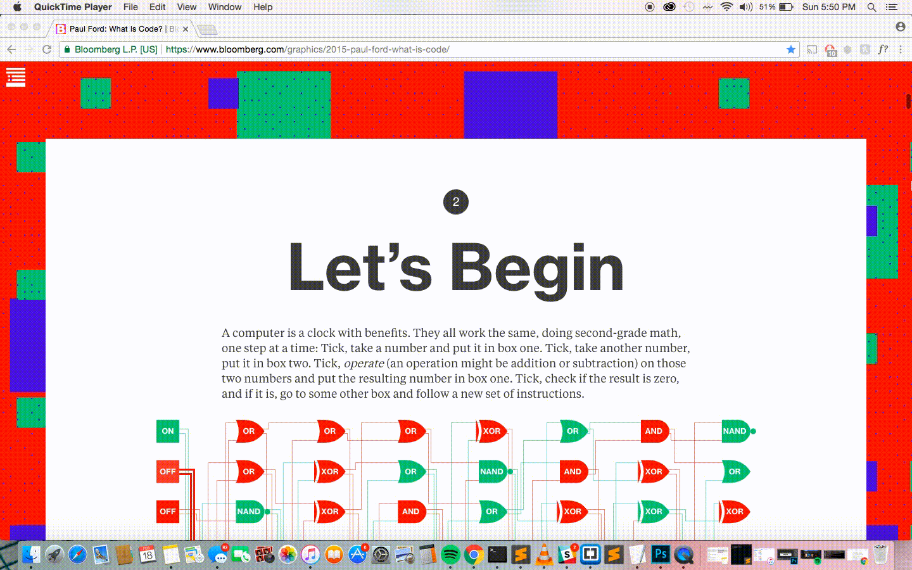
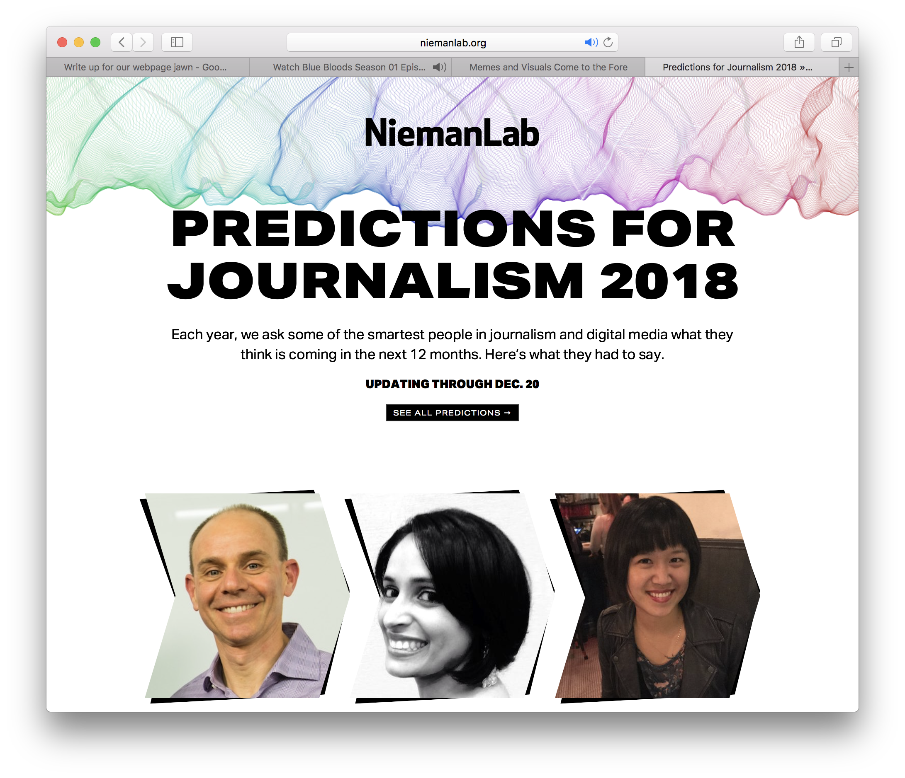

The original NiemanLabs Predictions for Journalism 2018 site offered a scroll heavy, traditional blog style design. The landing page had a mixture of photos, quotes, article titles, and short summaries that led to page that displayed a single individual article with a color scheme that felt quite random and juvenile, this made it almost impossible to contextualize what you were clicking on or what the article would be about. The landing page felt very disjointed and actually discouraged exploration of the website because it was so difficult to navigate. After clicking on a single article, the only way to read other ‘predictions’ was through a massive footer that displayed the titles and authors of the other articles, the footer felt overwhelming, causing the user to ignore it completely. One of the strengths of the original design however, was the article design itself. It was very simple and therefore encouraged the user to read through the article before doing anything else on the website.
In resigning the page, we wanted to the user to focus more of their time on reading the information we presented than scrolling or exploring the page, but still allow for the user to easily scroll through the article selections and choose something that would interest them. We accomplished this by displaying a photo of the author and the title of their article on the homepage and including a hover over function that showcased an enticing pull quote from the article itself. Once on an individual article, we decided to keep the footer as it encourages the reader to read and scroll through the entire article before clicking onto a different page, but we did simply it as to not be so overwhelming for the user. The user should spend about 15-20 minutes reading all of the article on the site, but because of the simple layout, the user does not have to consume all of the information available in one sitting - they are able to come back to the site any time (we assume between 1-3 times based on the amount of articles on the page) and easily pick up where they left off or choose a new article to read. Because we wanted the user to be able to interact with the page and share information, the user is linked to the author’s page on the official NiemanLabs site and can read any of their other pieces from there and encouraged to “share” the article in a tweet or Facebook post.
We looked at The New Yorker, Into The Gloss, and Refinery29 for inspiration on how to display the content in a simply yet concise fashion. We then looked to the Paul Fords “What is Code” article published on Bloomberg for visual inspiration. This led to the creation and general vibe of our website. We used Are.na to keep all of our inspiration and ideas in one easily accessible spot.

Based on the content of our website, we expect the average user to be in their early to mid twenties and interested in Journalism, particularly someone who is studying Journalism or someone newly involved in the industry itself. The user is most likely someone who who is interested in consumption trends or marketing trends within the industry and would like to know more information in progressive, engaging practices without a serious “business meeting” attitude. We purposely matched feel of the visuals to the content. Solely based on the visuals of our website, we expect the average user to be in their late teens to mid twenties and looking for information consumption from a lighthearted “not-too-serious” source.
The landing page introduces the different articles that the user is able to read and check out. We kept this page simple so that there is nothing to distract from the content on the page.
The article page features a large title and pull quote as well as the authors name which links to the Author’s official NiemanLabs page. There are also quick links to share the article on Twitter and Facebook. The The footer allows for easy access to the other articles on the page. This page is kept relatively simple in order to encourage the user to have full attention on the content of the article displayed.
Collaboration between our group members was essential to creating a successful website. Each member designed their own predictions article page, while the landing page was a collaborative effort between primarily Eva and Kamilah. Eva cleaned up the code for each page in order to make it more uniform and keep everything working properly in conjunction with the other pages. Izzi focused on most of the write ups and finding images throughout the project. We primarily communicated through Slack, though we did have one group meeting in person early on in designing the website.
Over the duration of the project, we learned a couple important lessons. By looking critically at the original website design, our group learned how to better identify what worked and what didn’t work in design. We learned how to identify “what” made a website good or bad and articulate problems. We were able to bring this new skillset to our own website design and make decisions based on the actual practicality of the site rather than just aesthetics. This was extremely beneficial because we truly felt like we were able to improve the functionality of the website and create something simple and useful. We learned to think about what pages we were encouraging users to go to and how the users were encouraged to interact with the site. This was the first time that any of us had worked on designing a website in a group setting, which proved to be challenging on multiple fronts. While we did have people to lean on if a code broke or we couldn’t get a function to work, we also had three different people with different artistic visions and ways of coding. This led to a lot of “cleanup”, but it eventually taught us how to use a few universal techniques and languages in order to tweak our own coding habits to match those of our partners. The project forced us to be readily available to work on things and answer questions, so Slack became our best friends while working. It was incredibly important to have access to each other at any times because our schedules were different and you’d never know when someone would message our group Slack channel for questions or answers any time we ran into problems.